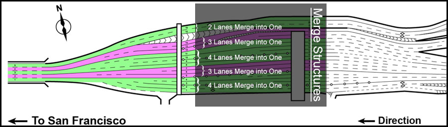

Bay Bridge - Back End Explanation
Notes about program:
I changed some of the default values...
- The length of road was changed to 1500ft instead of 1000ft due to
research. I found the road length from the metering lights to the final merge is around 0.3 miles (~1500ft).
- The top most merge structure will always contain only two lanes because they bypass the toll plaza completely
and partly come from W Grand Ave instead of an Interstate. (unless there is only one outgoing lane)
- I found the recommended minimun safe traveling distance as recommended by the California DMV.
They recommended to allow for 1 second of stopping distance per 10ft of your vehicle if traveling under 40mph.
If traveling over 40mph, add an extra second. 2.5 seconds traveling at 50mph (3.048m/s) is equal to 55.88 meters.
- Only the largest merge structure (the structure that has the most lanes) needs to be calculated.
The other merge structures can be ignored since all their cars will traverse the bridge faster than the ones in the
largest merge structure
- All values were converted to the metric system before put into the program
Explanation of Merge Structure:
As seen in the graphic below, only certain lanes merge down to the output lanes.

Basic Breakdown:
- Test user input for errors
- Create a bridge object based on user input
- Create the bridge's merge structure
- Print out total number of cars and bridge information
- Take the largest bridge merge structure and multiple by cars per lane to find total cars in merge structure
- Calculate how long it takes to accelerate to 50mph and how far the car traveled during that period
- Calculate time needed to traverse the rest of the bridge at 50mph
- Calculate minimun time for all the cars to traverse the bridge
- Calculate the time it takes for a car to travel one car length
- Multiply that time by number of cars in the merge structure
- Add that to the time that it takes for one car to traverse the bridge
- Calculate time for all the cars to traverse the bridge at the minimun safe following distance
- Calculate the time it takes for a car to travel to a safe following distance
- Multiply that time by number of cars in the merge structure
- Add that to the time that it takes for one car to traverse the bridge
- Print out information
List of Assumptions:
- Default of 16 incoming lanes
- Default of 5 outgoing lanes
- Default of 4 vehicles per lane (64 total)
- Default merge structure is (2, 3, 4, 3, 4)
- Vehicles start at 0mph (0m/s) and max at 50mph (22.352m/s)
- Vehicles accelerate at a constant rate of 10ft/s2 (3.048m/s2)
- Vehicles are 15ft (4.572m) long
- Minimun safe distance between vehicles is 2.5 seconds (55.88m @ 50mph)
- Lateral distance is not considered
- A vehicle not first in line is assumed to be instantly first in line if the car in front departs
- The length of the road from the metering lights to the final merge point is 1500ft (482.803m)
- The top most merge structure will always contain only two lanes
- EXCEPTION: If there is only one outgoing lane, all lanes will merge into one